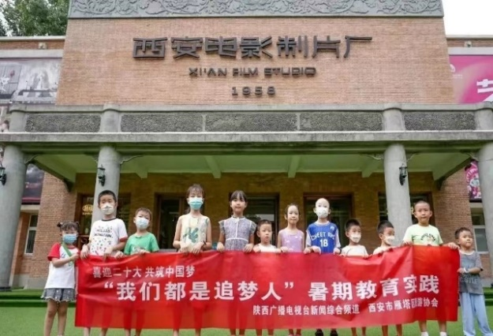

—— 走进西安电影制片厂

在项目盈利后，我们特别设立专项资金，定向为五个乡村幼儿家庭策划一次别开生面的亲子研学活动——走进西安电影制片厂。
活动以“光影”为线索，以“亲子”为纽带，以“研学”为核心，让孩子们从动画视角认识电影、在真实场景中触摸电影、在角色扮演中体验电影、在“大银幕”前分享电影，感受电影艺术的独特魅力，也让家长在陪伴中见证孩子的发现与成长。
活动对象：五个乡村幼儿家庭。
活动地点：西安电影制片厂。
活动方式：专项资金支持，志愿者全程陪伴，统一乘坐公共交通出行并安全返程。
活动开始前，志愿者向五个乡村幼儿家庭介绍活动规则与安全事项。随后，大家统一乘坐公共交通前往西安电影制片厂，带着期待开启“光影之旅”。
抵达后，我们为五个家庭安排生动的导览。特别从西安电影制片厂所拍摄的动画片视角切入，向孩子和家长介绍制片厂的历史与变迁。西安电影制片厂历史悠久，其历史可追溯到上世纪五十年代后期，于 1958 年正式成立，是新中国电影艺术创作与发展的重要见证。通过动画式的讲述，孩子们仿佛置身电影世界，对电影艺术与西安电影制片厂产生浓厚兴趣。
稍后，我们安排志愿者带领大家走进制片厂展示区。这里陈列着各种电影道具、服装和影片海报，与动画片中熟悉的场景和角色相映成趣。孩子们兴奋地穿梭其中，用眼睛观察、用手触摸、用心感受每一件展品。志愿者耐心解答问题，帮助孩子们更深入地了解电影制作的实物与背后故事。
随后，大家来到户外模拟拍摄区域。我们先询问孩子们喜爱的动画片，再为他们分配导演、演员、摄影师等角色，并邀请家长积极参与，扮演不同角色。孩子们兴奋地穿上电影道具服装，在志愿者指导下开始“电影拍摄之旅”。他们认真模仿动画片中的角色和动作，尽情享受电影制作的乐趣。
拍摄结束后，我们为孩子们播放他们在模拟拍摄中完成的小短片。看到自己出现在“大银幕”上，孩子们兴奋不已，纷纷分享感受。这一刻，电影不再遥远，而成为他们亲手创造的光影记忆。
最后，我们通过公共交通方式，将孩子和家长安全送回家，为这次亲子研学活动画上温暖句号。
用孩子熟悉的动画语言打开电影世界，降低理解门槛。
参观、触摸、扮演、拍摄、观影层层递进，形成完整研学闭环。
家长不是旁观者，而是共同创作者，增强陪伴感。
专项资金支持乡村幼儿家庭，让电影美育与亲子关爱真正落地。
这场西安电影制片厂之旅，既是一堂生动的电影艺术课，也是一次温暖的亲子陪伴行动。
孩子们在光影中看见更大的世界，在体验中种下艺术与梦想的种子；家长在共同参与中收获亲密与感动。
电影的魅力，因陪伴而更加闪亮。
| 日期 | 地点 | 时间 | 行程安排 | 学习内容 |
|---|---|---|---|---|
| 第一天上午 | 陕西师范大学长安校区北门 | 8:30 | 集合、欢迎词、核对人数、分发小马甲、合影留念 | 研学导师介绍行程安排与注意事项 |
| 乘车 | 8:30-9:10 | 乘大巴车前往西安电影制片厂 | 途中讲解景区，并引导幼儿进行动画片知识问答小游戏 | |
| 上午至下午 | 西安电影制片厂 | 9:25-11:25 | 参观游览 | 详细介绍建造历史与内部建筑，收集银杏叶片制作书签 |
| 11:30-12:00 | 展示区参观 | 参观电影道具、服装和影片海报，志愿者解答问题 | ||
| 12:00-12:30 | 午餐时光 | 享受亲子午餐 | ||
| 12:30-13:30 | 午休 | 研学导师带领幼儿午休 | ||
| 下午 | 西安电影制片厂 | 13:30-14:05 | 模拟拍摄体验 | 分配导演、演员、摄影师等角色，穿道具服装模拟拍摄 |
| 14:10-14:50 | 短片播放与反馈 | 播放模拟拍摄短片，进行简单反馈与分享 | ||
| 14:50-15:20 | 活动总结 | 负责人总结，家庭成员合影留念 | ||
| 15:20-16:00 | 返程 | 乘坐大巴车返回集合地点，由家长带领安全回家 |